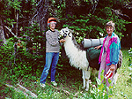

 |
Sunday and Friday will occupy apartment-style
housing adjacent to or on campus. Each apartment (3 double occupancy bedrooms-twin
beds-with shared common living room) houses maximum of 1 couple (private
bath) or 3 singles (unlimited, no extra charge) who share one bath. Part-time
camping in the mountains of Targhee National Forest with spectacular scenery,
wildlife and vegetation. Tent provided; maximum of 2 persons per tent.
Bring sleeping bag, ground pad, some rentals available. Pit toilets. Light
chores expected: help with cooking, clean-up, toilet preparation. Will
travel several miles a day up to 9,000 feet. For PHYSICALLY ACTIVE HOSTELERS.
No alcohol allowed; smoking prohibited.
Bus: Y Plane:Y Train: N Ferry: N |
| July 2-8, 2000
|
| July 2-8, 2000 - $478 | Top • Back |
| LLAMA PACKING
ON THE WEST SLOPE OF THE TETONS
Participants on this five-day llama packing trip into the high country will be studying the flora and fauna of the rugged Teton Mountains. Become acquainted with the cultural history of the area, as well as the natural history of the Teton region. Practical outdoor skills (safety precautions) and minimal impact camping techniques will be taught and used in the fragile, isolated alpine environment. Learn the history of llamas, how they came to North America, and their practical use today. Hostelers will be required to help pack the animals each day and hike with day packs weighing 15-20 pounds. However, llamas will do most of the “backpacking!” |
|
| July 16-22, 2000 - $478 | Top • Back |
| LLAMA PACKING
ON THE WEST SLOPE OF THE TETONS
Participants on this five-day llama packing trip into the high country will be studying the flora and fauna of the rugged Teton Mountains. Become acquainted with the cultural history of the area, as well as the natural history of the Teton region. Practical outdoor skills (safety precautions) and minimal impact camping techniques will be taught and used in the fragile, isolated alpine environment. Learn the history of llamas, how they came to North America, and their practical use today. Hostelers will be required to help pack the animals each day and hike with day packs weighing 15-20 pounds. However, llamas will do most of the "backpacking!" |
|